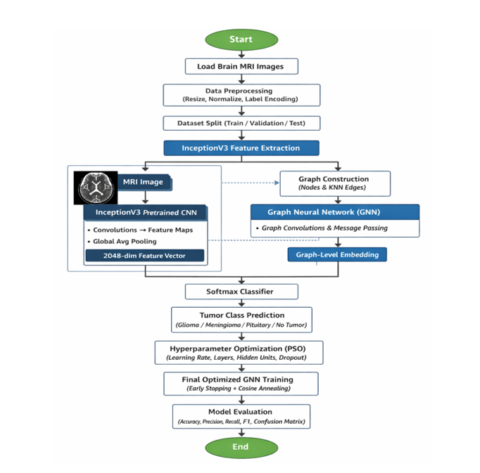
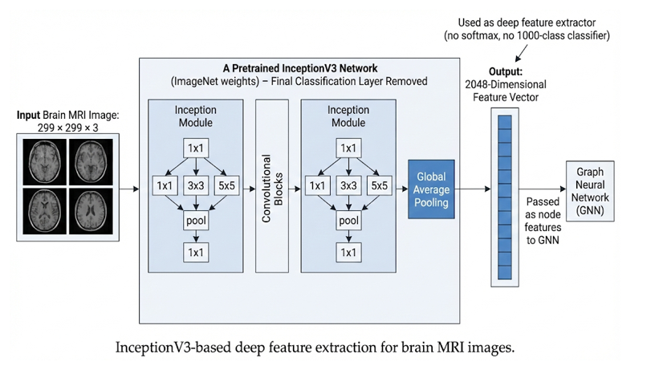
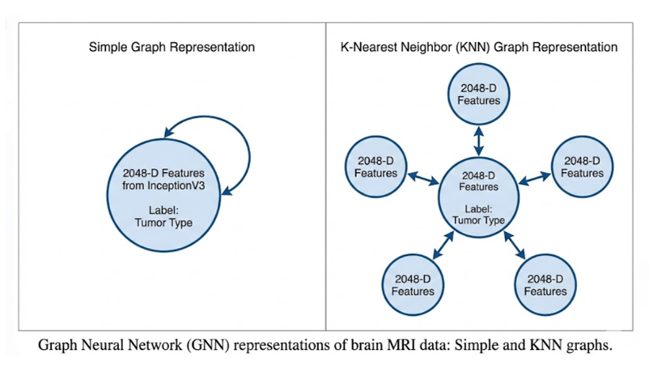
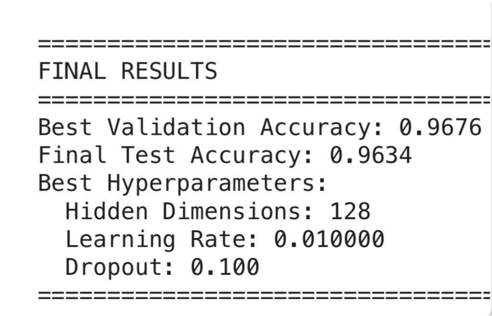

This project focuses on classifying brain tumors from MRI images using deep learning and graph neural networks. A pretrained InceptionV3 model is used to extract high-level image features, which are further processed using an Enhanced Graph Neural Network for accurate tumor classification.
The following diagram illustrates the complete workflow of the proposed brain tumor classification system, starting from MRI image input to final tumor prediction using InceptionV3-based feature extraction, graph construction, and Enhanced GNN classification.
The brain MRI dataset is divided into three subsets to ensure reliable training and evaluation. The training set is used to learn model parameters, the validation set monitors performance during training, and the test set provides a final, unbiased assessment of model generalization.
InceptionV3 is a deep convolutional neural network pretrained on the ImageNet dataset and is employed as a feature extractor. The final classification layer is removed, and each MRI image is transformed into a 2048-dimensional feature vector that captures discriminative visual characteristics.
These extracted features encode critical information related to tumor shape, texture, and spatial structure, forming a compact numerical representation suitable for graph-based learning.
Each MRI image is represented as a node in a graph, with node attributes defined by the extracted deep features. Edges are constructed using a K-Nearest Neighbor (KNN) strategy to model similarity relationships between images, resulting in a structured graph representation.
The Enhanced Graph Neural Network is composed of multiple GCNConv layers that enable information exchange among neighboring nodes. The architecture integrates ReLU activation functions, batch normalization, and dropout layers to improve convergence stability and reduce overfitting.
Global mean pooling is applied to aggregate node-level representations into a unified graph-level feature vector, which is subsequently passed to a fully connected layer for tumor classification.
Model training and evaluation are conducted using two core functions. The training function performs forward propagation, loss computation, and backpropagation, while the evaluation function assesses model performance on validation or test datasets without modifying model parameters.
Particle Swarm Optimization (PSO) is utilized to automatically determine optimal hyperparameters for the GNN model. The optimization process explores various configurations, including hidden layer size, learning rate, dropout rate, and the number of graph convolution layers.
Multiple inertia weight strategies-exponential decay, fractional decay, and triangular oscillation-are evaluated, with the best-performing configuration selected based on validation accuracy.
Using the optimized hyperparameters, the final Enhanced GNN model is trained with cosine annealing learning rate scheduling and early stopping mechanisms. These techniques ensure smooth convergence and prevent overfitting, while the best model is saved for later evaluation.
The optimized model is evaluated on an unseen test dataset. Performance is quantified using accuracy, precision, recall, F1-score, and confusion matrix visualization to provide a comprehensive assessment of classification quality.
Model code – Enhanced GNN Model for Brain Tumor Classification